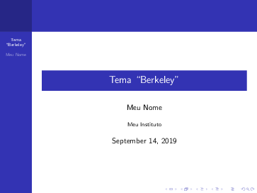

4. Apresentações com o Beamer¶
4.1 Pacote Beamer¶
O Beamer é o pacote padrão do LaTeX para a produção de apresentações no estilo do Microsoft PowerPoint. Assim como os documentos do LaTeX, é possível reconhecer os documentos de apresentações produzidos pelo Beamer pela sua qualidade gráfica e pelos seus estilos pré-definidos (embora seja possível criar estilos a partir do zero, esta tarefa não será abordada aqui).
Um documento do Beamer é tão simples quanto um documento do LaTeX. O beamer é uma classe de documentos, essim como o article, report, book etc. Para criar um documento Beamer, basta utilizar esta classe. Veja no Exemplo 1 a seguir, um exemplo mínimo.
{kind=link}
Diferente de um documento LaTeX mínimo, como aquele mostrado no Exemplo 1, um documento do Beamer contém frames, que são inseridos com o ambiente padrão frame. Um frame é um como um slide do Microsoft PowerPoint e dentro dele é possível inserir quaisquer ambientes que normalmente são inseridos dentro de um documento LaTeX comum, e.g., listas, figuras, tabelas, texto, textos em colunas, ambientes especiais como o minipages, listings e outros.
Nas seções a seguir, são mostrados alguns detalhes de alguns dos elementos principais de um documento Beamer.
4.2 Estilos¶
Assim como qualquer outro editor de apresentações, no Beamer também é possível utilizar temas e aplicar diferentes estilos e cores nas fontes e elementos da estrutura do documento. O estilo de um documento Beamer pode ser definido através do tema, esquema de cores e estilo das fontes. Para isto, utiliza-se o comando \usetheme{tema} no preâmbulo de um documento Beamer de forma que seja definido um dos 28 temas padrão do Beamer. Os nomes dos temas e os seus respectivos esquema de cores, são mostrados no Exemplo 2 a seguir.
| default | AnnArbor | Antibes |
|---|---|---|
 |
||
| Bergen | Berkeley | Berlin |
 |
 |  |
| Boadilla | CambridgeUS | Copenhagen |
 |
 |
|
| Darmstadt | Dresden | EastLansing |
 |
 |
 |
| Frankfurt | Goettingen | Hannover |
 |
 |
|
| Ilmenau | JuanLesPins | Luebeck |
 |
 |
 |
| Madrid | Malmoe | Marburg |
 |
 |
|
| Montpellier | PaloAlto | Pittsburg |
 |
 |
|
| Rochester | Singapore | Szeged |
 |
||
| Warsaw | ||
{kind=link}
{kind=link}
{kind=link}
{kind=link}
{kind=link}
{kind=link}
{kind=link}
{kind=link}
{kind=link}
{kind=link}
Para cada um dos temas apresentados no Exemplo 2, é possível alterar o esquema de cores. Para isso, além de se utilizar o comando usetheme, deve-se utilizar o comando \usecolortheme{esquema}. Os esquemas de cores disponíveis para cada uma dos temas são os seguintes:
defaultalbatrossbeaverbeetlecranedolphindoveflylilymonarcaorchidroseseagullseahorsesprucewhalewolverine
No Exemplo 2 é mostrado o tema AnnArbor'' com o esquema de coresbeaver''. Observe que este exemplo possui o mesmo código do Exemplo 1, com a diferença de que foram adicionados os comandos usetheme e usecolortheme.
Exemplo 2: Um documento Beamer mínimo com o tema AnnArbor e o esquema de cores beaver
1 2 3 4 5 6 7 8 9 10 11 12 13 14 15 16 17 18 19 20 | |

Dica
Veja mais opções de temas e as variações dos esquemas de cores do Beamer em https://hartwork.org/beamer-theme-matrix/.
Além da escolha do tema e do esquema de cores, é possível também alterar as cores e estilos de fontes de diferentes elementos visuais dos temas, de forma individual. O comando \setbeamercolor{tema}{elemento(s)} define o esquema de cores que será utilizado e quais elementos do tema escolhido deverão ser alterados. O comando \setbeamerfont{tema}{elemento(s)}, da mesma forma, permite alterar o estilo das fontes do tema escolhido. São muitos os elementos que podem ser alterados dentro de um frame do Beamer e, portanto, a apresentação deles foge ao escopo deste material.
Dica
Para conhecer mais sobre as possibilidades de customização dos diversos elementos de um frame do Beamer, recomenda-se a leitura da documentação do pacote em http://linorg.usp.br/CTAN/macros/latex/contrib/beamer/doc/beameruserguide.pdf.
4.3 Ambientes especiais¶
Em um frame do Beamer, podem ser inseridas listas, tabelas, imagens, equações e outros ambientes que já foram mostrados na Parte 2. Além destes ambientes, o Beamer suporta também ambientes especiais que podem ser utilizados para destacar as informações inseridas. Um destes ambientes especiais, é o ambiente block. Veja no Exemplo 3 a seguir como inserí-lo em um frame do Beamer:
Exemplo 3: Ambiente block em um frame do Beamer
1 2 3 4 5 6 7 8 9 10 11 12 13 14 15 16 17 18 19 20 | |
{kind=link}
Além do ambiente block, há também os ambientes exampleblock e alertblock. Cada um deles pode ser utilizado em situações distintas, dando importância ou chamando a atenção para determinadas partes da apresentação. Veja no Exemplo 4 a seguir, um exemplo do uso destes ambientes.
Exemplo 4: Ambiente block em um frame do Beamer
1 2 3 4 5 6 7 8 9 10 11 12 13 14 15 16 17 18 19 20 21 22 23 24 25 26 | |

4.4 Informações da Capa¶
Como em toda apresentação, é comum o primeiro frame ou slide possuir informações como título (\title{}), subtítulo (\subtitle{}), autor (\author{}), afiliação (\institute{}), data (\date{}), local e, eventualmente, alguma figura com o logo do evento ou da instituição (\titlegraphic{}). O Exemplo 5 mostra o uso destas macros para incluir as informações mais comuns na capa de uma apresentação confeccionada com o Beamer.
Exemplo 5: Informações da Capa em uma apresentação do Beamer
1 2 3 4 5 6 7 8 9 10 11 12 13 14 15 16 17 18 | |
{kind=link}
Caso seja do interesse do usuário, este poderá manter a data sempre atualizada a partir da utilização da macro \today, que sempre irá incorpoerar a data do dia em que a apresentação foi compilada. Logo, ao invés de inserir \date{September 2019}, insira \date{\today}.
4.5 Sumário¶
Assim como em documentos LaTeX, as apresentações escritas com a classe Beamer também podem conter um sumário com as seções e subseções. No Exemplo 1, o código inclui uma seção e uma subseção e os frames da apresentação podem ser organizados utilizando estas partições. Para inserir um sumário em uma apresentação Beamer, basta inserir a macro \tableofcontents1 no primeiro frame da apresentação. O Exemplo 6 mostra como inserir um Sumário na apresentação Beamer.
Exemplo 6: Sumário em um documento Beamer
1 2 3 4 5 6 7 8 9 10 11 12 13 14 15 16 17 18 19 20 21 22 23 24 25 26 27 | |
{kind=link}
Dependendo da forma como a apresentação é organizada, e dependendo também do tema escolhido, pode ser conveniente alterar a aparência ou o comportamento do sumário. Isto significa que é possível omitir alguns elementos (e.g., subseções) do sumário ou mesmo fazer com que ele se repita toda vez que uma nova seção da apresentação é iniciada. Veja no Exemplo 7 como omitir as subseções do sumário, utilizando uma opção hideallsubsections da macro \tableofcontents.
Exemplo 7: Sumário em um documento Beamer, omitindo as subseções
1 2 3 4 5 6 7 8 9 10 11 12 13 14 15 16 17 18 19 20 21 22 23 24 25 26 27 | |

Para alterar o comportamento do sumário em um documento Beamer, de forma que ele apareça sempre que uma nova seção for iniciada, pode-se incluir um novo frame logo após o início da seção, incluindo a macro \tableofcontents com a opção currentsection e/ou a opção currentsubsection. Veja no Exemplo 8 a seguir:
Exemplo 8: Alterando o comportamento do sumário em um documento Beamer
1 2 3 4 5 6 7 8 9 10 11 12 13 14 15 16 17 18 19 20 21 22 23 24 25 26 27 28 29 30 31 32 33 34 35 36 37 38 39 40 41 | |
{kind=link}
4.6 Barra de Navegação¶
Outro elemento que aparece na capa (e também dos demais frames), é a barra de navegação. Essa barra serve para facilitar a navegação entre os slides da apresentação, mas requer a utilização do mouse, o que pode não ser muito prático. Nos temas pré-definidos do Beamer, há uma barra de navegação persistente que é mostrada em detalhes na Figura 1:

Para desabilitar a barra de navegação, basta utilizar um dos comandos a seguir: \beamertemplatenavigationsymbolsempty ou \setbeamertemplate{navigation symbols}{}.
Veja no Exemplo 9 a seguir o efeito do uso de um destes comandos:
Exemplo 9: Desabilitando a barra de navegação do Beamer
1 2 3 4 5 6 7 8 9 10 11 12 13 14 15 16 17 18 19 20 21 22 23 24 | |

4.7 Transições e Animações¶
Efeitos de transição e animações também podem ser utilizadas em um documento Beamer. Entretanto, observe que, diferentemente do Microsoft PowerPoint, estes efeitos e animações são como as animações feitas em flipboards, i.e., animações quadro-a-quadro. Isso significa que vários frames (ou slides) são produzidos até que a animação ou o efeito final seja alcançado. Veja no Exemplo 10 como os itens de uma lista são apresentados de forma que apenas o item atual esteja realçado. Este efeito é muito comum e recebe o nome de pausa e ele é obtido a partir do comando \pause.
Exemplo 10: Adicionando pausas no Beamer com o comando pause
1 2 3 4 5 6 7 8 9 10 11 12 13 14 15 16 17 18 19 20 21 22 23 24 25 26 | |
{kind=link}
Observe no Exemplo 10 que os itens da lista são adicionados um após o outro de forma sequencial. Este comportamento pode ser alterado de forma que a ordem em que os itens aparecem possa ser controlada. Compare o Exemplo 10 com o Exemplo 11 a seguir:
Exemplo 11: Controlando itens em uma lista no Beamer
1 2 3 4 5 6 7 8 9 10 11 12 13 14 15 16 17 18 19 20 21 22 23 24 | |
{kind=link}
No Exemplo 11, não foi utilizado o comando \pause e, ao invés dele, foram adicionados parâmetros ao comando \item de forma que fosse especificado em qual slide aquela informação da lista deve aparecer. Dessa forma, o comando \item<2-> Item 1 deve aparecer apenas no slide número 2, o item descrito pelo comando \item<3-> Item 2 deve aparecer apenas no slide número 3 e assim por diante. Além disso, observe que há um sinal de - (menos) após o número do slide, indicando que aquele item irá aparecer a partir do número do slide indicado em diante. Na Tabela 1 estão listados alguns dos comandos de controle dos elementos de um slide do Beamer.
Tabela 1: Alguns comandos de controle dos elementos de um slide do Beamer.
| Comando | Descrição |
|---|---|
\textbf<>{} |
Controla quando um texto deverá ocorrer em negrito |
\textit<>{} |
Controle quando um texto deverá ocorrer em itálico |
\color<>{} |
Controla quando um texto deverá ocorrer em uma cor diferente |
\alert<>{} |
Controla quando um texto deverá ocorrer destacadamente |
Outra macro do Beamer que permite controlar as ações dos efeitos de pausa e transição, é o \onslide. Este comando permite indicar em qual slide um determinado item deverá ocorrer. Veja no Exemplo 12 o seu funcionamento. No exemplo, observe que a capa da apresentação foi suprimida com a exclusão da maxcro maketitle, Além disso, note quando os itens e elementos permanecem ou não nos frames produzidos.
Exemplo 12: Controlando itens em uma lista no Beamer com o comando onslide
1 2 3 4 5 6 7 8 9 10 11 12 13 14 15 16 17 18 19 20 21 22 23 | |

Nota
No LaTeX há outros pacotes que também podem ser utilizados para a confecção de apresentações e pôsteres no estilo do Microsoft PowerPoint. Entre eles, destacam-se a classe powerdot que fornece estilos muito semelhantes àqueles que podem ser encontrados no Microsoft PowerPoint e o pacote tcolorbox.
-
Quando o sumário é adicionado ao documento Beamer, pode ser necessário compilar o documento mais de uma vez. ↩